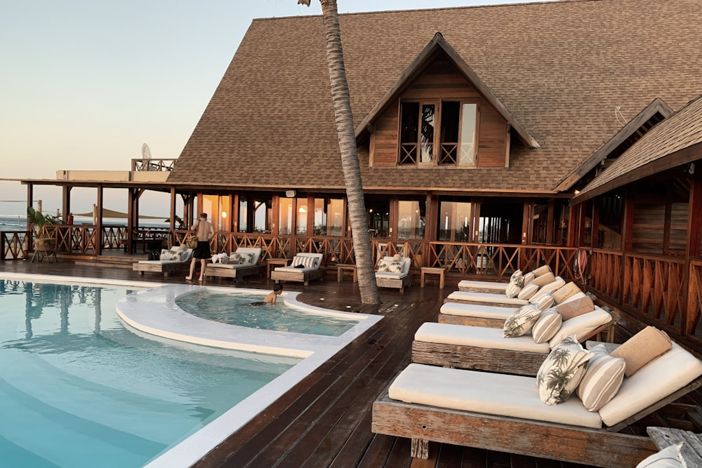
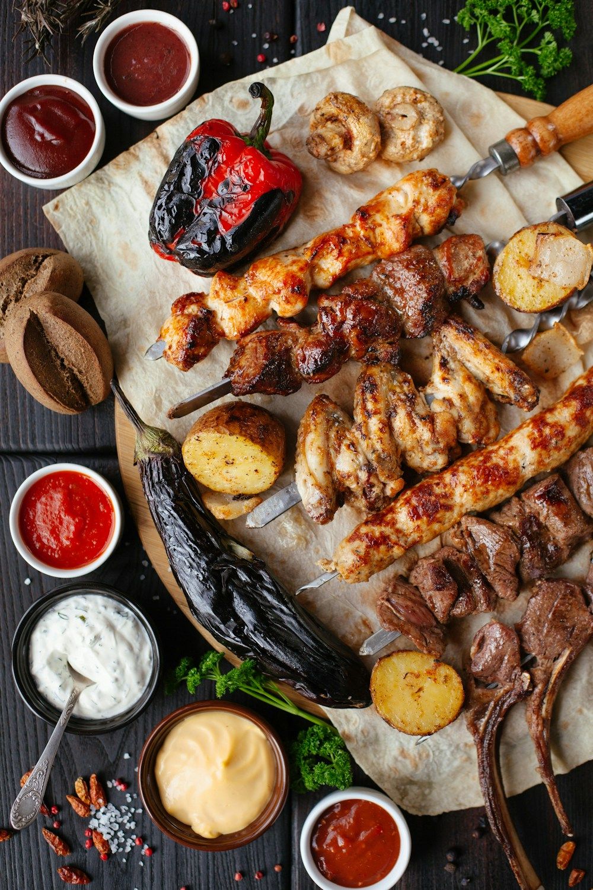

ĐIỂM DỪNG CHÂN CỦA BẠN
Ảnh minh họaMột nơi ở gần biển.
Phương án lưu trú mẫu · 2 khách
Một ý tưởng nhỏ. Một hành trình đáng nhớ.
Để TravelMate cùng bạn lên kế hoạch phần còn lại.
Từ nơi ở đến bữa ăn, từ một buổi sáng bên biển đến chiều dạo phố. Mọi thứ được kết nối trong một lịch trình của riêng bạn.

Xem từng ngày, chọn nơi muốn ghé và điều chỉnh mọi thứ theo nhịp của bạn.
Xem một ngày mẫu ↗Dành một khoảng nghỉ sau hành trình di chuyển. Giờ nhận phòng cần xác nhận với nơi lưu trú.
Khoảng 60 phútMột buổi chiều không vội. Chọn bãi biển phù hợp sau khi xác nhận vị trí nơi ở và điều kiện thời tiết.
Ngoài trời · 90 phút
KHÁM PHÁ QUA VỊ GIÁCƯu tiên quán gần nơi lưu trú. Nhà hàng và món ăn cụ thể sẽ được đề xuất theo sở thích của bạn.